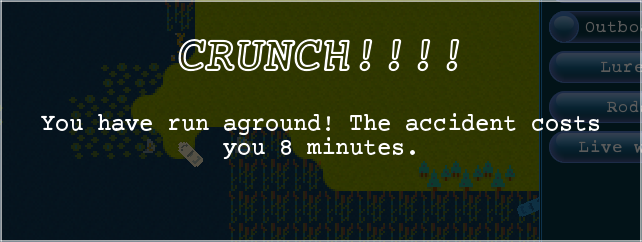
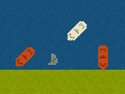

Your boat is equipped with a speedy outboard motor, you manoeuvre your boat with the keyboard:
Your outboard will start automatically as you begin to move, and it will cut off automatically when you idle in-place for a few seconds.
Your trolling motor is good for moving quietly, at the cost of moving much slower. Click on the trolling motor button or press the T key to toggle between trolling and outboard.
It is best to avoid land, you have an outboard, not a hovercraft. Running aground costs you valuable fishing time while you dislodge your vessel, not to mention the noise scares the fish!

Rocks and logs also resist any attempts at ramming them with your boat, so don't go tilting at windmills either, lest nearby fishermen think you had one too many.
Aquatic plants on the water's surface, on the other hand, are fine to traverse.
Try to steer clear of fellow competitors, a collision only costs time and money and you might find a disgruntled competitor trying to hook your hat as you part ways.
